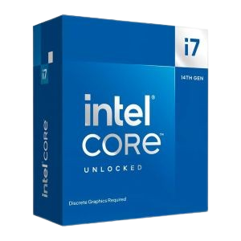

Processador Intel Core i7-14700KF, 20-Core, 28-Threads, 3.4GHz (5.6GHz Turbo), Cache 33MB, LGA1700, BX8071514700KF
R$ 2129,99
Especificações
Núcleos/Threads: 20 (8P + 12E) / 28 threads
Frequências: até 5.6 GHz turbo | P-core base 3.4 GHz | E-core base 2.5 GHz
Cache: 33 MB L3 + 28 MB L2
Memória: até 192 GB DDR5-5600 ou DDR4-3200 (dual-channel)
Consumo: 125 W base | até 253 W turbo
PCIe: até 20 linhas | PCIe 5.0 e 4.0
Soquete: FCLGA1700
Gráficos integrados: Não possui (KF)
Tecnologias: Intel Thread Director, Turbo Boost Max 3.0, Hyper-Threading, DL Boost